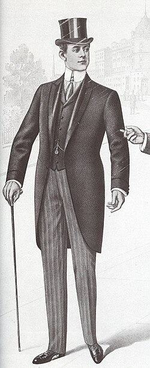

The Lindy effect states that the future longevity of something is roughly proportional to its current age. The more time something has been around, the more time it will stick around.
When we say something has “stood the test of time”, we are nodding, maybe unknowingly, at this effect.
To make this concrete, consider the long-term relevance of books like the Bible, Harry Potter, and (googling current BookTok trends) The Fourth Wing by Rebecca Yarros. We have a sense that the Bible is here to stay, for something on the order of thousands of years or more into the future. Harry Potter isn’t on that level… but it seems to have some real staying power, so maybe we’ll still be talking about it in, say, 100 years?
The Fourth Wing might be a cultural phenomenon that is talked about for decades, or it might be a short-lived fad. We don’t really know yet… but maybe we can develop a judgement ahead of time based on its quality, themes, audience size and so forth.
Men in offices are still wearing business suits—a Victorian era style—so the suit is very Lindy. Viral fashion trends tend to spike in popularity, before disappearing out of the public consciousness fairly quickly—not very Lindy.

So, suits as formal attire will probably still be around in another 200 years. That’s the idea, anyway.
The Lindy effect can be seen as something of a “huh, isn’t that interesting!”, but there are real statistical ideas behind it. It turns out that the effect is actually a mathematical consequence of a certain kind of survival model, that emerges when we take age as evidence for resilience.
If you know me, you know I’m about to bring up Bayes again.
A Bayesian Interpretation
The longer something survives, the more information we have about its resilience.
The notion of something’s age being a testament to its durability isn’t difficult to wrap your head around. The thing has survived this long, therefore must have been capable of doing so… there are no claims about the future, here. The part that is less intuitive at first is that the thing having survived for this long tells us about how long it might endure into the future.
In a Bayesian framing, the Lindy effect fits neatly into something called a Gamma-Exponential survival model.
If we take \(T\) as the lifetime of something, we can model its survival as:
\[ \begin{aligned} T \mid \lambda &\sim \mathrm{Exponential}(\lambda) \\ \lambda &\sim \mathrm{Gamma}(\alpha, \beta) \\ \Pr(T > t \mid \lambda) &= e^{-\lambda t} \\ \lambda \mid (T>t) &\sim \mathrm{Gamma}(\alpha, \beta + t) \end{aligned} \]
Where:
- \(T\) is total lifetime.
- \(\lambda\) is the annual hazard (destruction/failure probability), modelled with a Gamma distribution.
- \(\alpha\) is the prior shape parameter (how concentrated beliefs are).
- \(\beta\) is the prior rate parameter (baseline scale of hazard).
- \(t\) is observed age (years survived so far).
Because this is an example of something called a conjugate model, the posterior hazard is convenient to calculate. After observing survival to age \(t\):
\[ \lambda \mid (T>t) \sim \mathrm{Gamma}(\alpha,\,\beta+t) \]
So age is simply added to the prior rate parameter to calculate the posterior rate parameter, which is why the posterior survival behavior can be computed analytically with simple equations. Very neat!
Statistical notation and Gamma distributions might make this feel intimidating, but the concept is not so difficult. The exponential survival function says:
“at each time step \(t\), there is a probability of destruction \(\lambda\)”
That means that over time, the probability of survival tails off at an exponential rate:
\[ e^{-\lambda t} \]
Since we don’t know what that \(\lambda\) value is, as Bayesians we try to learn it with evidence while preserving our uncertainty about it. That uncertainty is what the Gamma distribution is capturing.
With the applet below you can play around with the age of the thing and the prior Gamma parameters, to see how they affect the survival function:
#| '!! shinylive warning !!': |
#| shinylive does not work in self-contained HTML documents.
#| Please set `embed-resources: false` in your metadata.
#| standalone: true
#| viewerHeight: 520
from shiny import App, render, ui
import matplotlib.pyplot as plt
import numpy as np
import math
from scipy.stats import gamma as gamma_dist
from matplotlib.ticker import PercentFormatter
from datetime import date
CURRENT_YEAR = date.today().year
app_ui = ui.page_fluid(
ui.layout_columns(
ui.input_slider("creation_year", "Creation year", min=1900, max=CURRENT_YEAR, value=1990, sep=""),
ui.input_slider("alpha", "Prior shape α", min=1, max=20, value=3),
ui.input_slider("beta", "Prior rate β", min=1, max=100, value=20),
col_widths=[4, 4, 4],
),
ui.layout_columns(
ui.output_plot("plot_gamma"),
ui.output_plot("plot_survival"),
col_widths=[6, 6],
),
)
def server(input, output, session):
@render.plot
def plot_gamma():
creation_year = float(input.creation_year())
t = max(0.0, float(CURRENT_YEAR) - creation_year)
a = float(input.alpha())
b = float(input.beta())
post_b = b + t
post_mean = a / post_b
# Cap x-range to prior gamma q=0.99 using analytic quantile (PPF)
lam_max = max(float(gamma_dist.ppf(0.99, a=a, scale=1.0 / b)), 0.02)
lam = np.linspace(1e-6, lam_max, 500)
# Gamma(shape=a, rate=b) and Gamma(shape=a, rate=b+t) densities
coef_prior = (b ** a) / math.gamma(a)
pdf_prior = coef_prior * (lam ** (a - 1)) * np.exp(-b * lam)
coef_post = (post_b ** a) / math.gamma(a)
pdf_post = coef_post * (lam ** (a - 1)) * np.exp(-post_b * lam)
fig, ax = plt.subplots(figsize=(7, 5))
ax.plot(lam, pdf_prior, linestyle=":", linewidth=2, color="#F58518", label="Prior Gamma(α, β)")
ax.plot(lam, pdf_post, linewidth=2, color="#4C78A8", label="Posterior Gamma(α, β+t)")
ax.fill_between(lam, 0, pdf_post, color="#4C78A8", alpha=0.18)
ax.set_xlabel("Annual hazard rate (%)")
ax.xaxis.set_major_formatter(PercentFormatter(xmax=1))
ax.set_title(r"Hazard rate ($\lambda$)")
ax.set_xlim(0, lam_max)
ax.set_ylim(bottom=0)
ax.set_yticks([])
ax.set_ylabel("")
ax.spines["left"].set_visible(False)
ax.spines["right"].set_visible(False)
ax.spines["top"].set_visible(False)
ax.grid(alpha=0.25)
ax.legend()
return fig
@render.plot
def plot_survival():
creation_year = float(input.creation_year())
t = max(0.0, float(CURRENT_YEAR) - creation_year)
a = float(input.alpha())
b = float(input.beta())
hmax = max(1.0, 5 * t)
post_b = b + t
h = np.linspace(0, hmax, 400)
# Credible bands + p50 (median) exponential survival curve
# λ | data ~ Gamma(shape=a, rate=post_b)
lam_lo95 = gamma_dist.ppf(0.025, a=a, scale=1.0 / post_b)
lam_hi95 = gamma_dist.ppf(0.975, a=a, scale=1.0 / post_b)
lam_lo50 = gamma_dist.ppf(0.25, a=a, scale=1.0 / post_b)
lam_hi50 = gamma_dist.ppf(0.75, a=a, scale=1.0 / post_b)
lam_p50 = gamma_dist.ppf(0.5, a=a, scale=1.0 / post_b)
# Since exp(-λh) decreases in λ, bounds swap:
s_upper95 = np.exp(-lam_lo95 * h)
s_lower95 = np.exp(-lam_hi95 * h)
s_upper50 = np.exp(-lam_lo50 * h)
s_lower50 = np.exp(-lam_hi50 * h)
s_p50 = np.exp(-lam_p50 * h)
fig, ax = plt.subplots(figsize=(7, 5))
ax.fill_between(h, s_lower95, s_upper95, color="#4C78A8", alpha=0.14, label="95% credible exponential band")
ax.fill_between(h, s_lower50, s_upper50, color="#4C78A8", alpha=0.28, label="50% credible exponential band")
ax.plot(h, s_p50, label="P50 exponential survival", linewidth=2, color="#4C78A8")
ax.set_xlabel("Additional years h")
ax.set_ylabel("Survival probability")
ax.set_title(f"Remaining survival years (age={int(t)})")
ax.set_xlim(0, hmax)
ax.set_ylim(0, 1)
ax.grid(alpha=0.25)
ax.legend()
return fig
app = App(app_ui, server)Because we’re Bayesing here, we get a full posterior distribution of survival rates from our input parameters and the thing’s age.
For a new thing, we don’t have much information about its resilience… so we rely more on our priors. For older things, their survival time gives us more information, which Bayes happily slurps up into a tighter posterior \(\lambda\) estimate. That tightens our uncertainty about the hazard rate, which in turn tightens up our uncertainty about the length of time something will be sticking around in the future.
To make this a bit more intuitive, consider something that has survived for 1000 years. If the hazard rate was 30% per year, how likely is it that it would have survived for so long? Incredibly small. But at 0.01%? That sounds more likely.
And it is more likely, mathematically! The 0.01% has a much higher likelihood, which, combined with our prior, gives us a posterior estimate. Repeat for all hazard rates (or rather, integrate over them) and you get a posterior distribution of \(\lambda\).
Notice that the hazard rate parameter \(\lambda\)—although represented with a distribution—is still a single value in the model. It doesn’t change through time. This is where the model breaks down. For most physical systems, we can’t assume failure rates stay flat.
So… don’t plug your birth year into that widget and get your hopes up.
Humanity is Lindy! But you aren’t. Sorry.
Changing hazards
Lindy isn’t always the right mental model. If you are driving a car from 2005 and it has never broken down on you, you could reasonably say the car has been very reliable. It has stood the test of time. The Lindy framing would then say “and therefore, it will likely still be running in another few decades!”
But this strikes us as wrong, because physical things like cars get less reliable as they age.
The Lindy effect is most applicable to things like technology, ideas, cultural practices, fashion, trends; things that lack clear physical limits.
I used the example of books earlier because they store ideas, and if those ideas are still relevant in the culture, those books will keep getting printed, which is a proxy for the Lindy-ness of what’s in them. A single copy of a book is not Lindy—it is going to start to fall apart in 30 or so years.
With examples like this, the hazard parameter \(\lambda\) is not a constant—it is increasing over time. That requires a different model, which, lacking a closed form solution, requires numerical methods (such as MCMC), to get Bayesy with.
Examples like human lifespan are more complicated still, as we are especially vulnerable as infants, then kind of hang out for 50 years, then start getting vulnerable again as we enter our golden years. This creates a “bathtub curve” of hazard rates.
Lindy is too simple a model for cases like this, and in reality is just a model, like any other. It is useful insofar as our assumptions apply.
Books? Eh, good enough.
Human lifespan? No, you idiot.
Fun with conjugate models
Subject to how much compute you can get your hands on, you can do Bayes on any statistical model, but most of the time it isn’t all squeaky-clean like the Gamma-Exponential survival model shown here.
Conjugate models are very fun to play with, though, and are very useful in certain contexts. I often use Beta-Binomials and their multivariate big brother Dirichlet-Multinomials for probabilistic analyses where that kind of uncertainty is worth preserving.
Conjugate models often have a satisfying “trick” that makes them very easy and fun to work with (like the “just add the age” trick shown above)… so once you know it, you can integrate them into your work and impress your friends.
Haha! Just kidding, nobody will care, and your boss just wanted a number anyway.
Thanks for reading.